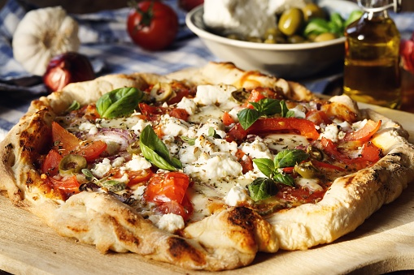

Mediterranean Pizza

Description
An authentic pie loaded with all the ingredients from the Mediterranean region. Olives, feta and artichoke makes for a great combo.
Servings: about 4
Ingredients
- 1 ball pizza dough
- 1 tbsp olive oil
- 2 tsp crushed garlic
- 1 1/2 cups low moisture mozzarella
- 1 cup spinach
- 1 handful cherry tomatoes, sliced
- 1/4 cup kalamata olives, pitted and sliced
- 1/2 cup crumbled fried eggplant
- 1/2 cup artichokes, quarted
- 1/2 small red onion, sliced
- 1/2 cup crumbled feta
- 1 sprig of basil
Steps
- Preheat oven to 400 degrees Fahrenheit.
- Roll out pizza dough and bake for 8 minutes.
- Drizzle olive oil over the pizza.
- Spread all toppings over the pizza evenly.
- Bake for about 15 minutes until vegetables are softened and golden.
- Let cool briefly, slice into eight pieces. Garnish with basil when ready to serve.
Return to main page